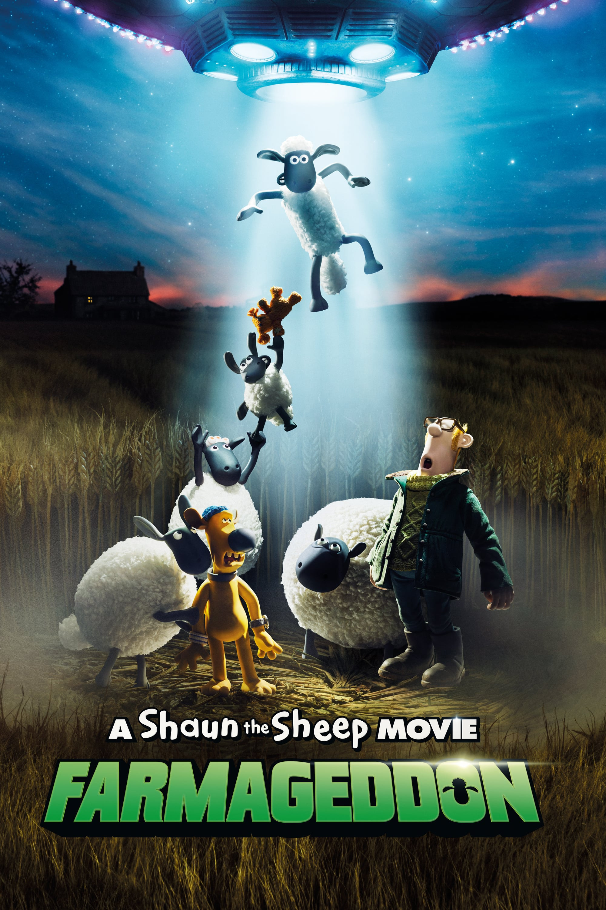

Shaun, vita da pecora: Farmageddon - Il film
Anno di uscita: 2019

Film di fantascienza e commedia in stop motion, è il seguito di Shaun, vita da pecora - Il film (2015) ed è basato sulla serie animata britannica Shaun the Sheep di Nick Park e Bob Baker, a sua volta spin-off del cortometraggio Una tosatura perfetta (1995).
Trama:
Quando un'aliena dotata di poteri straordinari atterra con la sua astronave vicino alla fattoria di Mossy Bottom, Shaun la pecora intraprende una missione per riportare a casa la visitatrice intergalattica prima che una sinistra organizzazione riesca a catturarla.
Regia:
Will Becher, Richard Phelan
Studio di animazione:
Candidato all'Oscar nel
2021